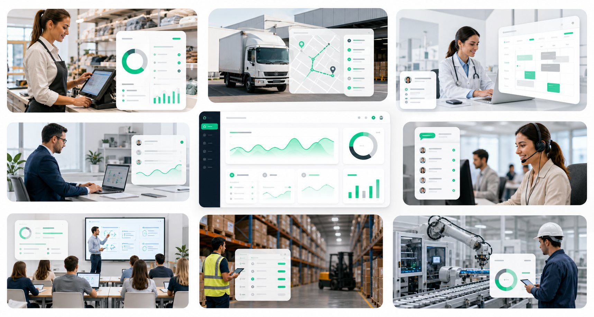

Diagnóstico
Mapeamos procesos, usuarios, datos y fricciones. Separamos síntomas de problemas reales para no construir de más.
- Relevamiento operativo
- Mapa AS-IS
- Riesgos iniciales
Creamos sistemas, webs e integraciones para equipos de cualquier rubro que necesitan trabajar mejor, con información clara y procesos más simples.
Servicios
Un bento de capacidades para diagnosticar, construir, integrar y escalar sistemas que trabajan con tu negocio.
Diseñamos flujos que reducen tareas repetitivas, ordenan datos y aceleran decisiones sin sumar complejidad operativa.
Sitios y plataformas modernas, rápidas y claras para convertir presencia digital en una herramienta comercial real.
Herramientas internas para administrar operaciones, clientes, stock, reportes o cualquier flujo propio.
Conectamos sistemas para que la información fluya entre ventas, operaciones, soporte y administración.
Antes de construir, detectamos prioridades, riesgos, dependencias y oportunidades de mejora medibles.
Acompañamos el lanzamiento con monitoreo, mejoras continuas y nuevas iteraciones cuando el negocio crece.
Rubros
No trabajamos para un único tipo de negocio. Adaptamos sistemas, webs e integraciones al modo real en que opera cada organización.

Proceso
Un flujo claro para avanzar sin improvisar: entendemos, priorizamos, construimos, implementamos y mejoramos con datos reales.
Mapeamos procesos, usuarios, datos y fricciones. Separamos síntomas de problemas reales para no construir de más.
Definimos alcance, impacto esperado y camino técnico con prioridades claras.
Construimos en ciclos cortos con validaciones frecuentes y foco en uso real.
Preparamos deploy, pruebas, capacitación y transición para que la solución entre en operación.
Medimos uso, detectamos nuevas oportunidades y evolucionamos el sistema con cambios concretos.
Integraciones
Unimos formularios, planillas, sistemas de gestión, pagos, mensajería, reportes y APIs para que la información deje de viajar a mano.
Herramientas & tecnologías
No tenemos una sola herramienta. Elegimos la tecnología que mejor resuelve cada problema.
Proyectos
Ejemplos de soluciones que combinan análisis, interfaz, automatización e integración para resolver una operación completa.
Panel centralizado para ventas, stock, clientes y reportes, diseñado para reducir planillas dispersas y ordenar decisiones diarias.
Landing premium con foco en conversión, performance y claridad de propuesta.
Flujos entre formularios, CRM, notificaciones y bases internas para eliminar carga manual.
Asistente interno para clasificar consultas, preparar respuestas y derivar casos con contexto operativo.
Automatización
La idea puede estar verde. Si existe una tarea repetitiva, un dato que se copia a mano o una decisión que tarda demasiado, ya hay punto de partida.
Sobre NexoLT
"Antes de proponer cualquier solución, nos sentamos a escuchar. Entender el negocio y a dónde querés llegar es lo que define si algo va a funcionar de verdad."
NexoLT es una consultora especializada en soluciones digitales con foco en el impacto concreto. Trabajamos con empresas, negocios y emprendedores que necesitan herramientas tecnológicas que realmente funcionen en su contexto.
NexoLT nació de la convicción de que la tecnología debe estar al servicio del negocio, no al revés. Por eso nuestro punto de partida siempre es la escucha activa y el análisis profundo.
Empezar una conversaciónPróximo paso
Traé el problema. Nosotros ayudamos a convertirlo en un sistema, una web o una automatización que tenga sentido para tu operación.
Consultar proyectoContacto
No hace falta tener todo claro. Con una idea o un problema alcanza para empezar.
Completá el formulario o escribinos directamente. Respondemos en menos de 24 horas.
software.nexolt@gmail.com @nexolt.ar en Instagram